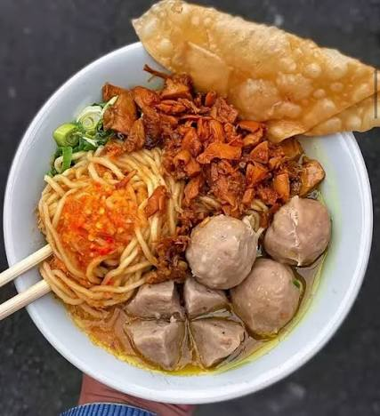

Nasi Goreng
Nasi goreng adalah salah satu makanan favorit saya karena rasanya gurih dan cocok dimakan kapan saja.
Makanan Favorit
Nasi goreng adalah salah satu makanan favorit saya karena rasanya gurih dan cocok dimakan kapan saja.

Mie ayam memiliki perpaduan mie, ayam, dan kuah yang membuatnya menjadi makanan yang lezat.

Ayam geprek menjadi favorit karena memiliki rasa gurih dan pedas.
Saya menyukai berbagai jenis makanan dengan rasa yang berbeda-beda.
Gurih, pedas, dan lezat.